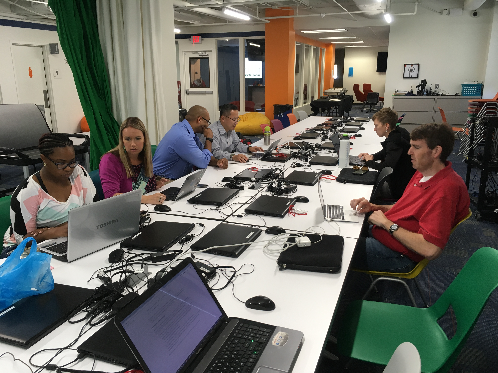

Savvy Coders Student Showcase
Welcome to the Student Showcase for the August 2017 Savvy Coders Cohort
Click on the student profiles below to go to our portfolio sites. Thanks for stopping by!

As I get older, I recognize just how important it is to be surrounded by people who deeply believe in our value and goodness even when we lose our footing. It took me years to rid myself of the lite-dimmers and it has been much clearer sailing since. Not that there isn't learning in having difficult people to overcome, but eventually it becomes essential to be surrounded by those who lift and wish us higher. If they don't see you in your highest light, wish them well and cut the cord. If they don't help you glow, then let them go. – Jeff Brown
- Meg's Contact Info